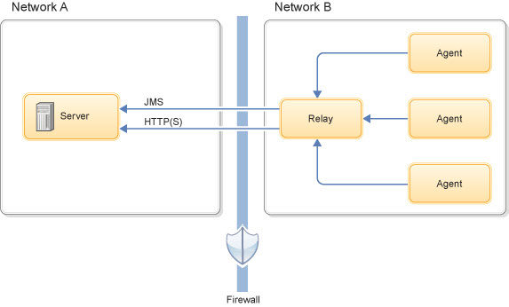
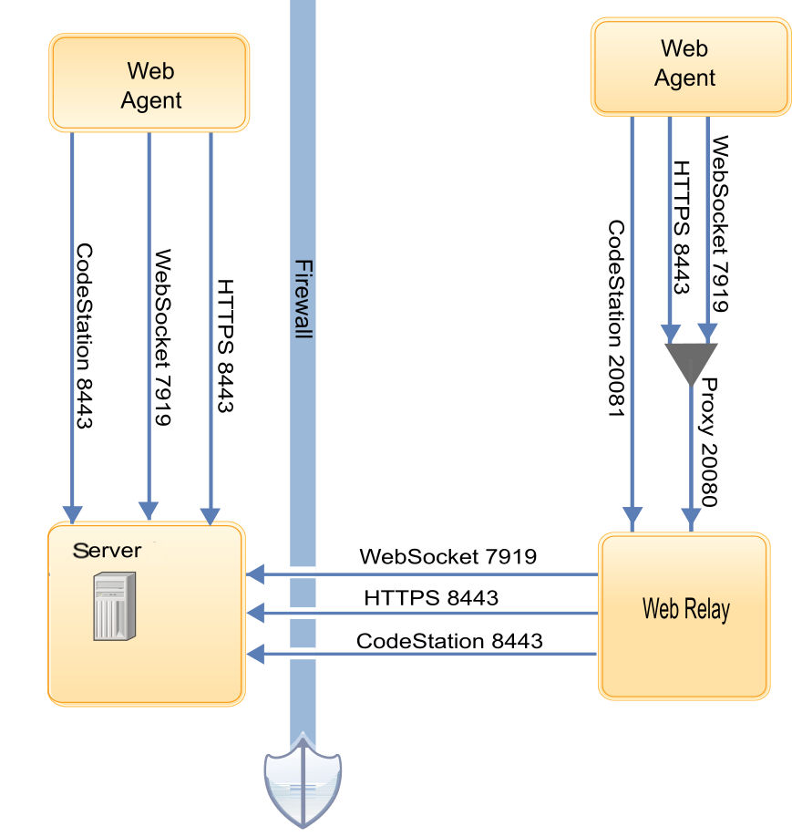

Agent relays
Agent relays coordinate communication between agents and the IBM DevOps Deploy (Deploy) server. Agent relays improve the performance of communication between the server and agents. Relays also allow agents to communicate through firewalls.
To enhance performance and reduce maintenance, Deploy can use agent relays to communicate with remote agents. Instead of each agent connecting directly to the server, agents connect to agent relays, which then connect directly to the server. Using agent relays in this way reduces load on the server because the server has fewer direct connections.
Agent relays also simplify communication across networks and firewalls. If multiple agents are in a remote network without an agent relay, each agent must connect to the server individually. In this case, each agent must have network permission to connect to the server, including firewall permissions. With an agent relay, the agents connect only to the relay, and the relay is the only system that contacts the server directly, such as with a VPN or tunnel.
Agent relays are often convenient when the agents are on cloud systems, because cloud systems are often separated from the Deploy server by a firewall or require a VPN or tunnel to reach the server.

The agent relay communicates with the server and the agents by using the same combination of HTTP, and HTTPS communication protocols that the agents use. As long as there is at least a low-bandwidth WAN connection between the server and agent relay, the Deploy server can send work to agents in other locations.
agentrelay.properties file:
agentrelay.http_proxy.use_rabbit=true The new proxy can now support up to 10,000
connected web agents, although to reach maximum scalability, OS file descriptor and ephemeral port
limits may need to be raised.- 8080 and 8443 for HTTP and HTTPS connections to the server
- 20080 for HTTP proxy connections from agents.
- 20081, the encrypted port, for artifact cache requests from agents.
The server does not open connections to agents or agent relays.

You can also cache artifacts on agent relays to improve system performance. See Caching artifacts on agent relays.
Example
The following simple artifact move illustrates the mechanics of remote communications:
- A remote agent starts and establishes a connection to the agent relay through WebSocket
- The agent relay alerts the Deploy server through WebSocket that the remote agent is online.
- The server sends an artifact download command to the relay through WebSocket, and the relay delivers the message to the remote agent, also through WebSocket.
- The server locates the artifacts. If the artifacts are not in the relay's CodeStation cache, the server sends the artifacts to the relay over HTTP or HTTPS.
- The agent relay streams the artifacts directly to the agent over the server-relay HTTP or HTTPS connection.
- After the remote agent completes the work, it informs the server through the agent relay WebSocket connection.